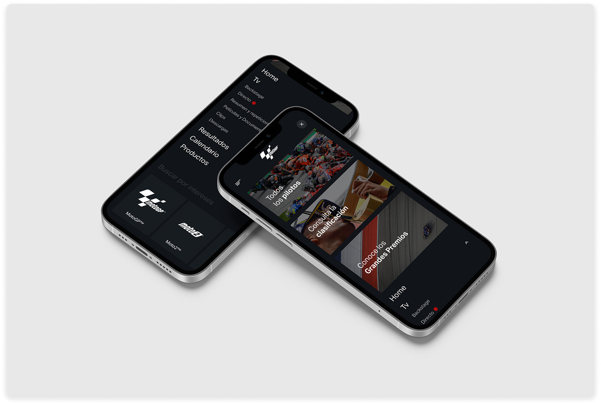
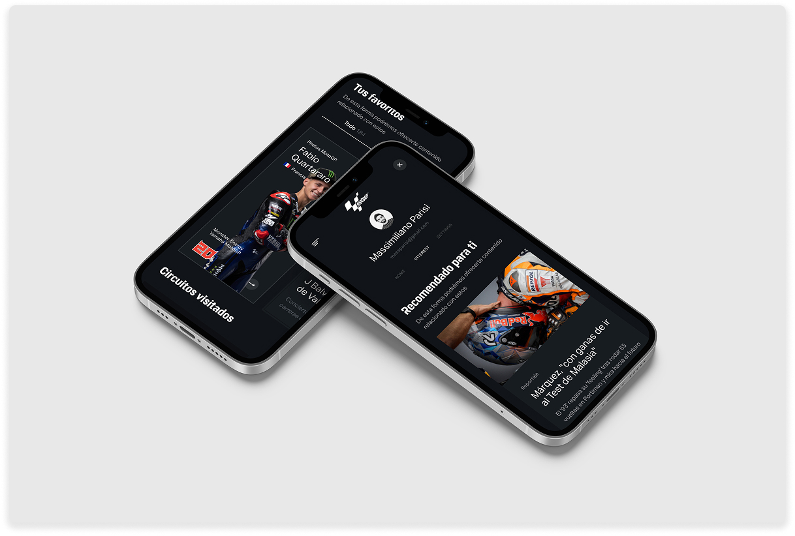
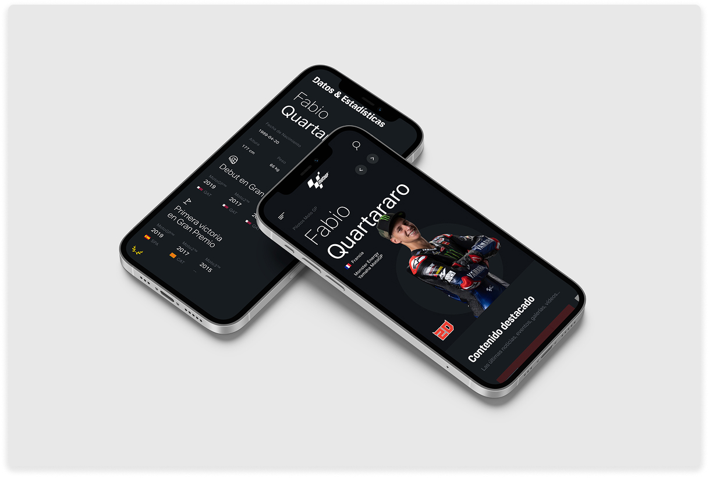
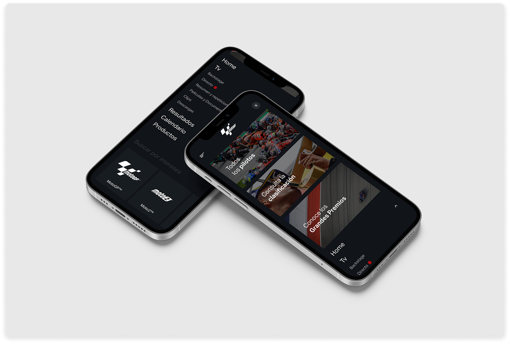
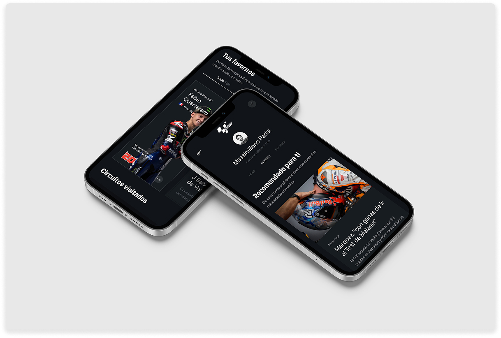
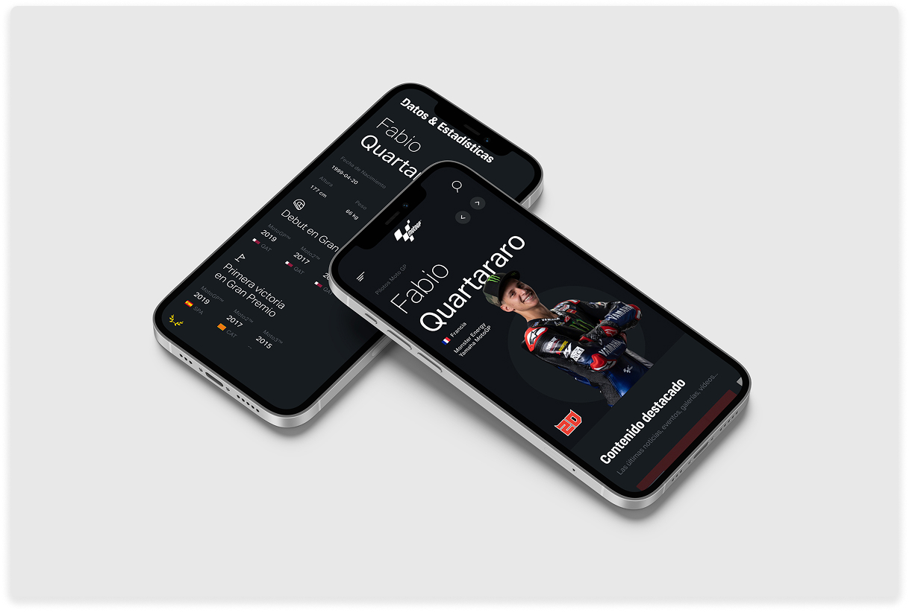

MotoGP
Racing Platform Visual Transformation + Feature POC
Overview
MotoGP partnered with Accenture to modernize its digital presence and explore new feature concepts for a very content-heavy, mobile-first audience. I led the visual direction, created design guidelines, and built proof-of-concept experiences that made the product feel premium, fast, and easier to navigate on race weekends.
The work balanced brand and entertainment energy with real usability: cleaner hierarchy, better discovery, and patterns that could scale across mobile and desktop without turning the UI into a chaotic highlight reel.
Mobile Experience
Mobile-first flows designed for race-day usage: fast discovery, clearer navigation, and content modules that make video, stats, and stories feel organized instead of overwhelming.
 





Desktop Experience
Desktop layouts extend the same visual system and hierarchy to larger screens, keeping content discovery and live moments easy to scan without losing the energy of the brand.
Impact
The new visual system and mobile-first patterns improved hierarchy and discoverability across the platform. The POCs gave MotoGP a concrete roadmap for new features that fit fan behavior on race weekends and scaled cleanly across devices.